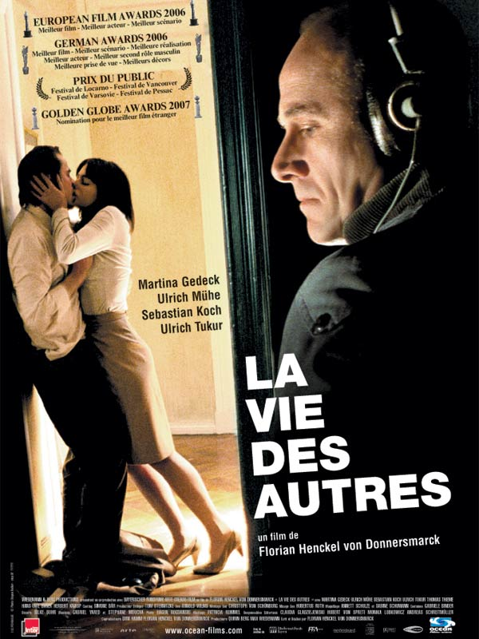

My catalog of films
 |
The Intouchables (2011)After he becomes a quadriplegic from a paragliding accident, an aristocrat hires a young man from the projects to be his caregiver. |
Gladiator (2000)When a Roman General is betrayed, and his family murdered by an emperor's corrupt son, he comes to Rome as a gladiator to seek revenge. |
|
|  |
The life of others (2006)In 1984 East Berlin, an agent of the secret police, conducting surveillance on a writer and his lover, finds himself becoming increasingly absorbed by their lives. |